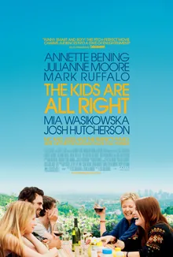

The genetics
There is no genetic science in the film; it is about biological versus social parenthood. The children's wish to meet their donor drives the plot, and Paul enters the family as a charming outsider who shares the children's genes but none of their history. The story favours nurture. The biological link brings curiosity and some affinity, but when Paul tries to claim a place in the family, even asking Jules to leave Nic and bring the children to live with him, Nic calls him an intruder and tells him to start his own family. What endures is the family that raised the children. The film reflects real practice in donor conception: many sperm banks let donor-conceived people seek contact with their donor once they reach adulthood, as Joni does here.
The story
Nic, an obstetrician, and Jules, who is starting a landscape design business, are a married couple in the Los Angeles area. Each gave birth to one of their two children, eighteen-year-old Joni and fifteen-year-old Laser, using sperm from the same anonymous donor. Laser wants to meet his biological father, and Joni, now old enough, asks the sperm bank to put them in touch. The donor, Paul, a relaxed, bohemian restaurant owner, is delighted to meet the teenagers, and the mothers invite him into their lives. Jules starts working on Paul's garden and they begin an affair, while Paul undermines Nic's authority with the children. When Nic discovers the affair, the family shuts Paul out, and after Joni leaves for college the two mothers reconcile.